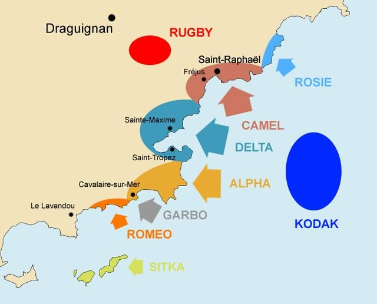

Le littoral du Var a été divisé en trois zones majeures pour disperser les défenses allemandes. Chaque secteur représentait un défi géographique différent pour les barges de débarquement et les chars blindés.
Plus d'informations sur les sites de débarquement : Site du Ministère des Armées